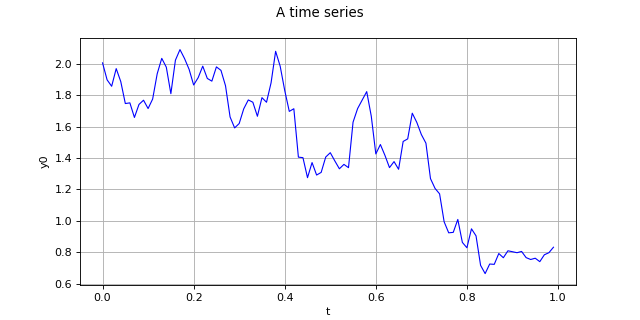

TimeSeries¶
(Source code, png)

- class TimeSeries(*args)¶
Time series.
- Available constructors:
TimeSeries(nSteps,dim)
TimeSeries(timeGrid, dim)
TimeSeries(timeGrid, sample)
TimeSeries(field)
- Parameters:
- nStepsint
Enables to create a regular time grid on
![[0, nSteps]]() which time step is equal to 1.
which time step is equal to 1.- timeGrid
RegularGrid Regular time grid of the time series.
- dimint
Dimension of the values of the time series at each time stamp. By default, the values are equal to the null vector.
- sample2-d sequence of float
Values assigned to each time stamp of the time series.
- field
Field Maps a field into a time series when the associated lesh cn be interpretated as a regular time grid.
Examples
Create a time series:
>>> import openturns as ot >>> tmin = 0.0 >>> timeStep = 0.1 >>> n = 5 >>> myTimeGrid = ot.RegularGrid(tmin, timeStep, n) >>> myValues = [[1.0], [2.0], [1.5], [4.5], [0.5]] >>> myTimeSeries = ot.TimeSeries(myTimeGrid, myValues)
Draw the time series:
>>> graph = myTimeSeries.draw()
Methods
add(*args)Add a new value to the time series and extend the associated time grid.
asDeformedMesh(*args)Get the mesh deformed according to the values of the field.
draw()Draw the first marginal of the field if the input dimension is less than 2.
drawMarginal([index, interpolate])Draw one marginal field if the input dimension is less than 2.
exportToVTKFile(fileName)Create the VTK format file of the field.
Accessor to the object's name.
Get the description of the field values.
getId()Accessor to the object's id.
Get the dimension of the domain
 .
.Get the input weighted mean of the values of the field.
getMarginal(*args)Marginal accessor.
getMesh()Get the mesh on which the field is defined.
getName()Accessor to the object's name.
Get the dimension
 of the values.
of the values.Get the mean of the values of the field.
Accessor to the object's shadowed id.
getSize()Get the number of values inside the field.
Get the mesh as a time grid if it is 1D and regular.
getValueAtIndex(index)Get the value of the field at the vertex of the given index.
Get the values of the field.
Accessor to the object's visibility state.
hasName()Test if the object is named.
Test if the object has a distinguishable name.
norm()Compute the (
 ) norm.
) norm.setDescription(description)Set the description of the vertices and values of the field.
setName(name)Accessor to the object's name.
setShadowedId(id)Accessor to the object's shadowed id.
setValueAtIndex(index, val)Assign the value of the field to the vertex at the given index.
setValues(values)Assign values to a field.
setVisibility(visible)Accessor to the object's visibility state.
asSample
- __init__(*args)¶
- add(*args)¶
Add a new value to the time series and extend the associated time grid.
- Available usages:
add(sample)
add(timeSeries)
- Parameters:
- sample2-d sequence of float, of dimension the same as the dimension of the values of the time series.
- timeSeries
TimeSeries, which time grid must match with the initial time grid (one follows the other).
- Returns:
- newTimeSeries:
TimeSeries, which regular grid has been extended with a new time stamp or a second time grid, associated to the new values.
- newTimeSeries:
- asDeformedMesh(*args)¶
Get the mesh deformed according to the values of the field.
- Parameters:
- verticesPaddingsequence of int
The positions at which the coordinates of vertices are set to zero when extending the vertices dimension. By default the sequence is empty.
- valuesPaddingsequence of int
The positions at which the components of values are set to zero when extending the values dimension. By default the sequence is empty.
- Returns:
- deformedMesh
Mesh The initial mesh is deformed as follows: each vertex of the mesh is translated by the value of the field at this vertex. Only works when the input dimension
 : is equal to the dimension of the field
after extension.
: is equal to the dimension of the field
after extension.
- deformedMesh
- draw()¶
Draw the first marginal of the field if the input dimension is less than 2.
- Returns:
- graph
Graph Calls drawMarginal(0, False).
- graph
See also
- drawMarginal(index=0, interpolate=True)¶
Draw one marginal field if the input dimension is less than 2.
- Parameters:
- indexint
The selected marginal.
- interpolatebool
Indicates whether the values at the vertices are linearly interpolated.
- Returns:
- graph
Graph If the dimension of the mesh is
 and interpolate=True: it
draws the graph of the piecewise linear function based on the selected
marginal values of the field and the vertices coordinates
(in
and interpolate=True: it
draws the graph of the piecewise linear function based on the selected
marginal values of the field and the vertices coordinates
(in  ).
).If the dimension of the mesh is
and interpolate=False: it
draws the cloud of points which coordinates are (vertex, value of the
marginal index).If the dimension of the mesh is
 and interpolate=True: it
draws several iso-values curves of the selected marginal, based on a
piecewise linear interpolation within the simplices (triangles) of the
mesh. You get an empty graph if the vertices are not connected through
simplicies.
and interpolate=True: it
draws several iso-values curves of the selected marginal, based on a
piecewise linear interpolation within the simplices (triangles) of the
mesh. You get an empty graph if the vertices are not connected through
simplicies.If the dimension of the mesh is
and interpolate=False: if
the vertices are connected through simplicies, each simplex is drawn with
a color defined by the mean of the values of the vertices of the simplex.
In the other case, it draws each vertex colored by its value.
- graph
- exportToVTKFile(fileName)¶
Create the VTK format file of the field.
- Parameters:
- myVTKFilestr
Name of the output file. No extension is append to the filename.
Notes
Creates the VTK format file that contains the mesh and the associated values that can be visualised with the open source software Paraview .
- getClassName()¶
Accessor to the object’s name.
- Returns:
- class_namestr
The object class name (object.__class__.__name__).
- getDescription()¶
Get the description of the field values.
- Returns:
- description
Description Description of the vertices and values of the field, size
 .
.
- description
- getId()¶
Accessor to the object’s id.
- Returns:
- idint
Internal unique identifier.
- getInputDimension()¶
Get the dimension of the domain
.- Returns:
- nint
Dimension of the domain
: .
- getInputMean()¶
Get the input weighted mean of the values of the field.
- Returns:
- inputMean
Point Weighted mean of the values of the field, weighted by the volume of each simplex.
- inputMean
Notes
The input mean of the field is defined by:
![\displaystyle \frac{1}{V} \sum_{S_i \in \cM} \left( \frac{1}{n+1}\sum_{k=0}^{n} \vect{v}_{i_k}\right) |S_i|]()
where
 is the simplex of index
is the simplex of index  of the mesh,
of the mesh,  its volume and
its volume and  the values of
the field associated to the vertices of , and
the values of
the field associated to the vertices of , and
 .
.
- getMarginal(*args)¶
Marginal accessor.
- Parameters:
- iint or sequence of int
Index of the marginal.
- Returns:
- value
Field. Marginal field.
- value
- getMesh()¶
Get the mesh on which the field is defined.
- Returns:
- mesh
Mesh Mesh over which the domain
is discretized.
- mesh
- getName()¶
Accessor to the object’s name.
- Returns:
- namestr
The name of the object.
- getOutputDimension()¶
Get the dimension
of the values.- Returns:
- dint
Dimension of the field values:
.
- getOutputMean()¶
Get the mean of the values of the field.
- Returns:
- temporalMean
Point Mean of the values of the field.
- temporalMean
Notes
If we note
 the values in
the values in
 of the field, then the temporal mean is defined by:
of the field, then the temporal mean is defined by:
Only makes sense in the case of a regular grid.
- getShadowedId()¶
Accessor to the object’s shadowed id.
- Returns:
- idint
Internal unique identifier.
- getSize()¶
Get the number of values inside the field.
- Returns:
- sizeint
Number
 of vertices in the mesh.
of vertices in the mesh.
- getTimeGrid()¶
Get the mesh as a time grid if it is 1D and regular.
- Returns:
- timeGrid
RegularGrid Mesh of the field when it can be interpreted as a
RegularGrid. We check if the vertices of the mesh are scalar and are regularly spaced in but we don’t check if the
connectivity of the mesh is conform to the one of a regular grid (without
any hole and composed of ordered instants).
- timeGrid
- getValueAtIndex(index)¶
Get the value of the field at the vertex of the given index.
- Parameters:
- indexint
Vertex of the mesh of index index.
- Returns:
- value
Point The value of the field associated to the selected vertex, in
.
- value
- getValues()¶
Get the values of the field.
- Returns:
- values
Sample Values associated to the mesh. The size of the sample is the number of vertices of the mesh and the dimension is the dimension of the values (
). Identical to getSample().
- values
- getVisibility()¶
Accessor to the object’s visibility state.
- Returns:
- visiblebool
Visibility flag.
- hasName()¶
Test if the object is named.
- Returns:
- hasNamebool
True if the name is not empty.
- hasVisibleName()¶
Test if the object has a distinguishable name.
- Returns:
- hasVisibleNamebool
True if the name is not empty and not the default one.
- norm()¶
Compute the (
) norm.- Returns:
- normfloat
The field’s norm computed using the mesh weights.
- setDescription(description)¶
Set the description of the vertices and values of the field.
- Parameters:
- myDescription
Description Description of the field values. Must be of size
and give the
description of the vertices and the values.
- myDescription
- setName(name)¶
Accessor to the object’s name.
- Parameters:
- namestr
The name of the object.
- setShadowedId(id)¶
Accessor to the object’s shadowed id.
- Parameters:
- idint
Internal unique identifier.
- setValueAtIndex(index, val)¶
Assign the value of the field to the vertex at the given index.
- Parameters:
- indexint
Index that characterizes one vertex of the mesh.
- value
Pointin. New value assigned to the selected vertex.
- setValues(values)¶
Assign values to a field.
- Parameters:
- values2-d sequence of float
Values assigned to the mesh. The size of the values is the number of vertices of the mesh and the dimension is
.
- setVisibility(visible)¶
Accessor to the object’s visibility state.
- Parameters:
- visiblebool
Visibility flag.


{kind=link}